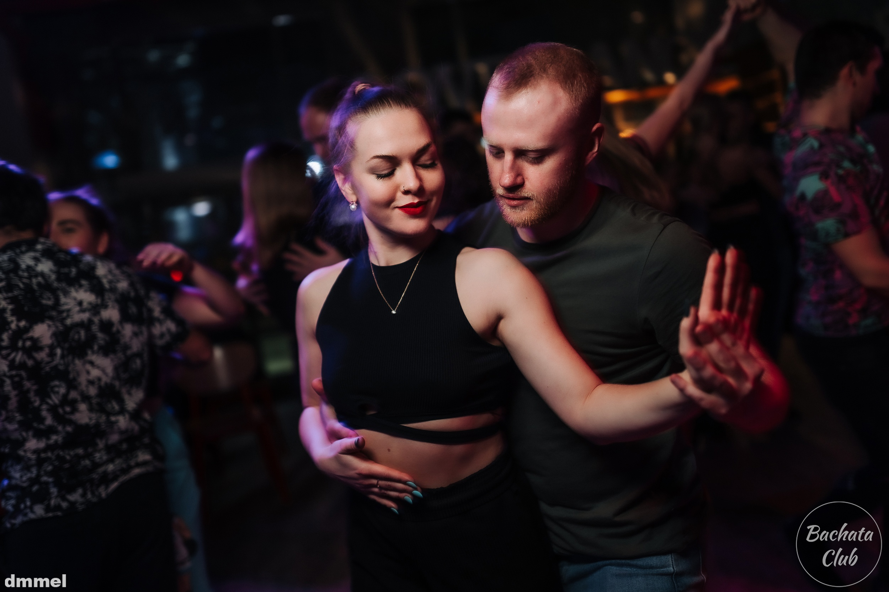
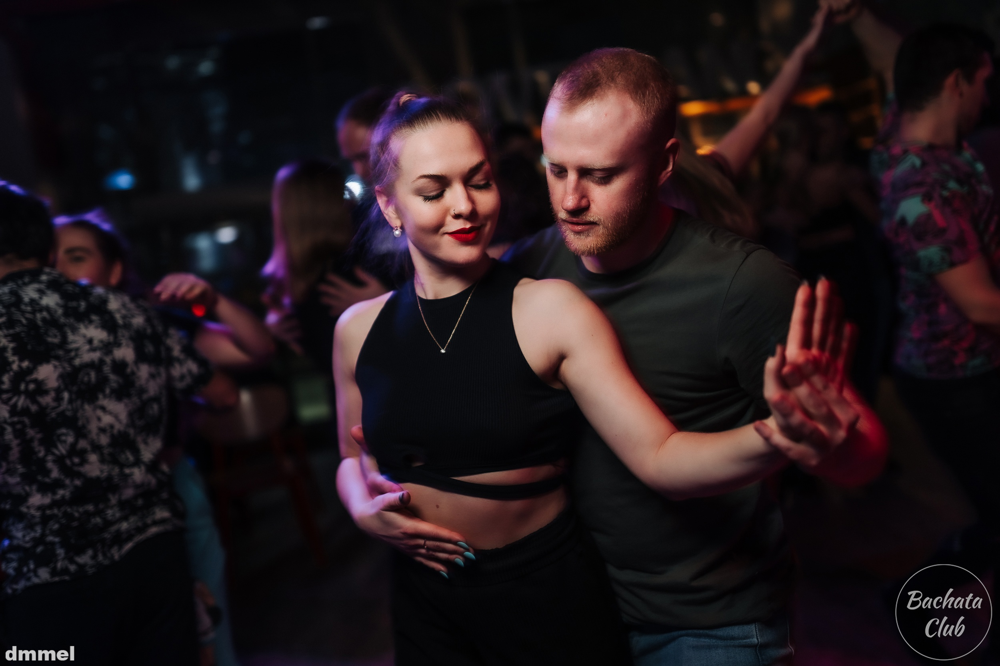

Что такое бачата?
Бачата (исп. bachata) — танец родом из Доминиканской Республики, получивший широкое распространение по всему миру. На данный момент бачата - это одно из самых популярных парных танцевальных направлений в России. Бачата относится к социальным танцам (social dance).
 

Отличия социальных танцев от бальных танцев
- Цель
Социальные направления танцуют на вечеринках для развлечения и отдыха. Это и отличает их от бальных танцев, основная цель которых - участие и победа в соревнованиях.
- Импровизация
Социальные танцы это всегда импровизация. Бальные танцы - это заготовленная программа.
- Партнер
Танцевать социальные направления можно с любым партнером/партнершей на вечеринке. Есть общие принципы ведения/следования, в рамках которых партнеры строят свою импровизацию. Бальные танцы можно танцевать только с одним партнером/партнершей, с которым вы учили конкретный танец.
- Уровень подготовки
Социальные направления можно танцевать всем, вне зависимости от возраста и предыдущего опыта. Например, достаточно нескольких занятий, чтобы станцевать свою первую бачату. Чтобы станцевать бальный танец нужно, чтобы мама отдала вас маленького в секцию бальных танцев и через пару лет у вас получится хороший танец.
Направления в бачате